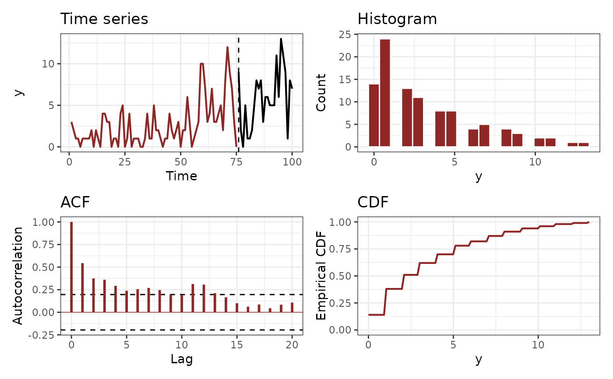
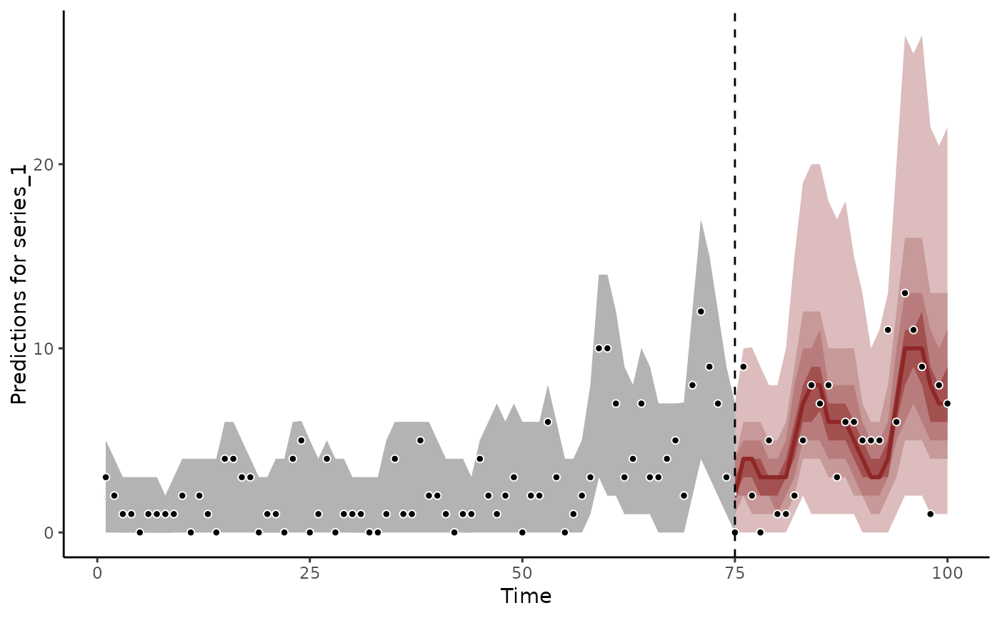
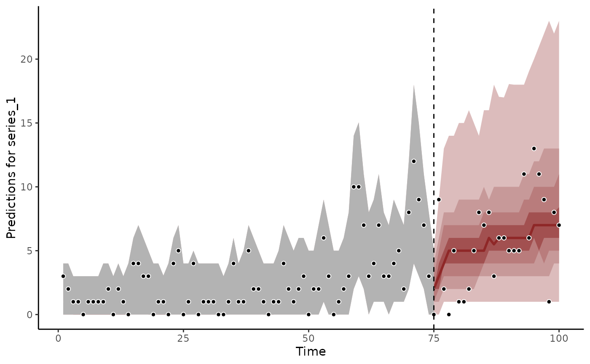
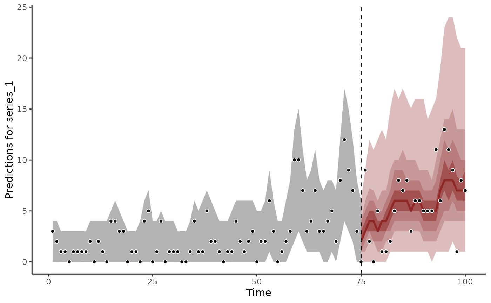

Combine forecasts from mvgam models into evenly weighted ensembles
Source:R/ensemble.R
ensemble.mvgam_forecast.RdGenerate evenly weighted ensemble forecast distributions from
mvgam_forecast objects.
Arguments
- object
listobject of classmvgam_forecast. Seeforecast.mvgam()- ...
More
mvgam_forecastobjects.- ndraws
Positive integer specifying the number of draws to use from each forecast distribution for creating the ensemble. If some of the ensemble members have fewer draws than
ndraws, their forecast distributions will be resampled with replacement to achieve the correct number of draws
Value
An object of class mvgam_forecast containing the ensemble
predictions. This object can be readily used with the supplied S3
functions plot and score.
Details
It is widely recognised in the forecasting literature that
combining forecasts from different models often results in improved
forecast accuracy. The simplest way to create an ensemble is to use
evenly weighted combinations of forecasts from the different models.
This is straightforward to do in a Bayesian setting with mvgam as
the posterior MCMC draws contained in each mvgam_forecast object
will already implicitly capture correlations among the temporal posterior
predictions.
Examples
# \donttest{
# Simulate some series and fit a few competing dynamic models
set.seed(1)
simdat <- sim_mvgam(
n_series = 1,
prop_trend = 0.6,
mu = 1
)
plot_mvgam_series(
data = simdat$data_train,
newdata = simdat$data_test
)

m1 <- mvgam(
y ~ 1,
trend_formula = ~ time +
s(season, bs = 'cc', k = 9),
trend_model = AR(p = 1),
noncentred = TRUE,
data = simdat$data_train,
newdata = simdat$data_test,
chains = 2,
silent = 2
)
m2 <- mvgam(
y ~ time,
trend_model = RW(),
noncentred = TRUE,
data = simdat$data_train,
newdata = simdat$data_test,
chains = 2,
silent = 2
)
# Calculate forecast distributions for each model
fc1 <- forecast(m1)
fc2 <- forecast(m2)
# Generate the ensemble forecast
ensemble_fc <- ensemble(fc1, fc2)
# Plot forecasts
plot(fc1)
#> Out of sample DRPS:
#> 42.537099

plot(fc2)
#> Out of sample DRPS:
#> 47.85449

plot(ensemble_fc)
#> Out of sample DRPS:
#> 43.69230084

# Score forecasts
score(fc1)
#> $series_1
#> score in_interval interval_width eval_horizon score_type
#> 1 3.510983 1 0.9 1 crps
#> 2 1.036645 1 0.9 2 crps
#> 3 2.084661 1 0.9 3 crps
#> 4 1.479518 1 0.9 4 crps
#> 5 0.945487 1 0.9 5 crps
#> 6 1.438502 1 0.9 6 crps
#> 7 2.098841 1 0.9 7 crps
#> 8 1.574345 1 0.9 8 crps
#> 9 1.172795 1 0.9 9 crps
#> 10 1.137843 1 0.9 10 crps
#> 11 1.408721 1 0.9 11 crps
#> 12 1.570467 1 0.9 12 crps
#> 13 1.011725 1 0.9 13 crps
#> 14 0.984936 1 0.9 14 crps
#> 15 0.904016 1 0.9 15 crps
#> 16 0.953421 1 0.9 16 crps
#> 17 0.976065 1 0.9 17 crps
#> 18 4.409200 1 0.9 18 crps
#> 19 1.236594 1 0.9 19 crps
#> 20 2.163924 1 0.9 20 crps
#> 21 1.719160 1 0.9 21 crps
#> 22 1.618558 1 0.9 22 crps
#> 23 4.481412 1 0.9 23 crps
#> 24 1.314201 1 0.9 24 crps
#> 25 1.305079 1 0.9 25 crps
#>
#> $all_series
#> score eval_horizon score_type
#> 1 3.510983 1 sum_crps
#> 2 1.036645 2 sum_crps
#> 3 2.084661 3 sum_crps
#> 4 1.479518 4 sum_crps
#> 5 0.945487 5 sum_crps
#> 6 1.438502 6 sum_crps
#> 7 2.098841 7 sum_crps
#> 8 1.574345 8 sum_crps
#> 9 1.172795 9 sum_crps
#> 10 1.137843 10 sum_crps
#> 11 1.408721 11 sum_crps
#> 12 1.570467 12 sum_crps
#> 13 1.011725 13 sum_crps
#> 14 0.984936 14 sum_crps
#> 15 0.904016 15 sum_crps
#> 16 0.953421 16 sum_crps
#> 17 0.976065 17 sum_crps
#> 18 4.409200 18 sum_crps
#> 19 1.236594 19 sum_crps
#> 20 2.163924 20 sum_crps
#> 21 1.719160 21 sum_crps
#> 22 1.618558 22 sum_crps
#> 23 4.481412 23 sum_crps
#> 24 1.314201 24 sum_crps
#> 25 1.305079 25 sum_crps
#>
score(fc2)
#> $series_1
#> score in_interval interval_width eval_horizon score_type
#> 1 4.027405 1 0.9 1 crps
#> 2 1.601258 1 0.9 2 crps
#> 3 3.404619 0 0.9 3 crps
#> 4 0.890614 1 0.9 4 crps
#> 5 2.538261 1 0.9 5 crps
#> 6 2.620900 1 0.9 6 crps
#> 7 1.892433 1 0.9 7 crps
#> 8 0.918860 1 0.9 8 crps
#> 9 1.634557 1 0.9 9 crps
#> 10 1.184265 1 0.9 10 crps
#> 11 1.456347 1 0.9 11 crps
#> 12 1.715809 1 0.9 12 crps
#> 13 1.019106 1 0.9 13 crps
#> 14 0.957008 1 0.9 14 crps
#> 15 1.113928 1 0.9 15 crps
#> 16 1.133647 1 0.9 16 crps
#> 17 1.101088 1 0.9 17 crps
#> 18 2.844725 1 0.9 18 crps
#> 19 1.189586 1 0.9 19 crps
#> 20 3.681478 1 0.9 20 crps
#> 21 2.473191 1 0.9 21 crps
#> 22 1.617496 1 0.9 22 crps
#> 23 4.132401 1 0.9 23 crps
#> 24 1.385082 1 0.9 24 crps
#> 25 1.320426 1 0.9 25 crps
#>
#> $all_series
#> score eval_horizon score_type
#> 1 4.027405 1 sum_crps
#> 2 1.601258 2 sum_crps
#> 3 3.404619 3 sum_crps
#> 4 0.890614 4 sum_crps
#> 5 2.538261 5 sum_crps
#> 6 2.620900 6 sum_crps
#> 7 1.892433 7 sum_crps
#> 8 0.918860 8 sum_crps
#> 9 1.634557 9 sum_crps
#> 10 1.184265 10 sum_crps
#> 11 1.456347 11 sum_crps
#> 12 1.715809 12 sum_crps
#> 13 1.019106 13 sum_crps
#> 14 0.957008 14 sum_crps
#> 15 1.113928 15 sum_crps
#> 16 1.133647 16 sum_crps
#> 17 1.101088 17 sum_crps
#> 18 2.844725 18 sum_crps
#> 19 1.189586 19 sum_crps
#> 20 3.681478 20 sum_crps
#> 21 2.473191 21 sum_crps
#> 22 1.617496 22 sum_crps
#> 23 4.132401 23 sum_crps
#> 24 1.385082 24 sum_crps
#> 25 1.320426 25 sum_crps
#>
score(ensemble_fc)
#> $series_1
#> score in_interval interval_width eval_horizon score_type
#> 1 3.7448801 1 0.9 1 crps
#> 2 1.3049103 1 0.9 2 crps
#> 3 2.7188101 1 0.9 3 crps
#> 4 1.0531847 1 0.9 4 crps
#> 5 1.6000941 1 0.9 5 crps
#> 6 1.9510025 1 0.9 6 crps
#> 7 1.9609699 1 0.9 7 crps
#> 8 1.1392267 1 0.9 8 crps
#> 9 1.2953463 1 0.9 9 crps
#> 10 1.0844419 1 0.9 10 crps
#> 11 1.4276032 1 0.9 11 crps
#> 12 1.6297092 1 0.9 12 crps
#> 13 0.9705596 1 0.9 13 crps
#> 14 0.9642434 1 0.9 14 crps
#> 15 0.9780006 1 0.9 15 crps
#> 16 0.9265218 1 0.9 16 crps
#> 17 0.9303929 1 0.9 17 crps
#> 18 3.5171350 1 0.9 18 crps
#> 19 1.2202058 1 0.9 19 crps
#> 20 2.7867838 1 0.9 20 crps
#> 21 2.0012329 1 0.9 21 crps
#> 22 1.5288787 1 0.9 22 crps
#> 23 4.3712888 1 0.9 23 crps
#> 24 1.3367543 1 0.9 24 crps
#> 25 1.2501243 1 0.9 25 crps
#>
#> $all_series
#> score eval_horizon score_type
#> 1 3.7448801 1 sum_crps
#> 2 1.3049103 2 sum_crps
#> 3 2.7188101 3 sum_crps
#> 4 1.0531847 4 sum_crps
#> 5 1.6000941 5 sum_crps
#> 6 1.9510025 6 sum_crps
#> 7 1.9609699 7 sum_crps
#> 8 1.1392267 8 sum_crps
#> 9 1.2953463 9 sum_crps
#> 10 1.0844419 10 sum_crps
#> 11 1.4276032 11 sum_crps
#> 12 1.6297092 12 sum_crps
#> 13 0.9705596 13 sum_crps
#> 14 0.9642434 14 sum_crps
#> 15 0.9780006 15 sum_crps
#> 16 0.9265218 16 sum_crps
#> 17 0.9303929 17 sum_crps
#> 18 3.5171350 18 sum_crps
#> 19 1.2202058 19 sum_crps
#> 20 2.7867838 20 sum_crps
#> 21 2.0012329 21 sum_crps
#> 22 1.5288787 22 sum_crps
#> 23 4.3712888 23 sum_crps
#> 24 1.3367543 24 sum_crps
#> 25 1.2501243 25 sum_crps
#>
# }